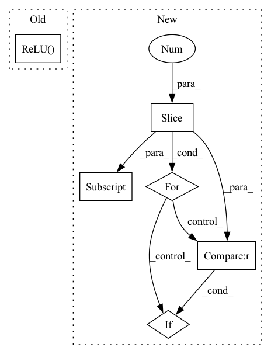

Pattern ID :12813
Before Change
mlp_modules = []
mlp_modules.append(nn.BatchNorm1d(3))
mlp_modules.append(nn.Linear(3, self.critic_layers_1))
mlp_modules.append(nn.ReLU() )
mlp_modules.append(nn.Linear(self.critic_layers_1, self.critic_layers_2))
mlp_modules.append(nn.ReLU())
mlp_modules.append(nn.Linear(self.critic_layers_2, self.critic_layers_3))After Change
def construct_critic_layers(self, layer_dims):
mlp_modules = []
mlp_modules.append(nn.BatchNorm1d(3))
for i, (d_in, d_out) in enumerate(zip(layer_dims[:-1], layer_dims[1:] )):
mlp_modules.append(nn.Linear(d_in, d_out))
if i != len(layer_dims[:-1]) - 1 :
mlp_modules.append(nn.ReLU())
else:
mlp_modules.append(nn.Sigmoid())In pattern: SUPERPATTERN
Frequency: 3
Non-data size: 6
Instances Fragment ID: 43390791
Project Name: rucaibox/recbole
Commit Name: df4a0e1f23d7d6597635af15d4665c02fabbd232
Time: 2021-03-02
Author: chenghaoran29@foxmail.com
File Name: recbole/model/general_recommender/ract.py
M Class Name: RaCT
N Class Name: RaCT
M Method Name: construct_critic_layers(2)
N Method Name: construct_critic_layers(1)
M Parent Class: GeneralRecommender
N Parent Class: GeneralRecommender
M File Name: recbole/model/general_recommender/ract.py
N File Name: recbole/model/general_recommender/ract.py
M Start Line: 174
M End Line: 183
N Start Line: 172
N End Line: 181
Before Change
self.operators = nn.ModuleList([
Flatten(),
nn.Linear(in_dim + action_dim, hidden_dim),
nn.ReLU()
])
for l in range(num_layers_linear_hidden - 1):
self.operators.append(nn.Linear(hidden_dim, hidden_dim))After Change
nn.Linear(in_dim + action_dim, prev_object[1]),
])
for layer, argument in value_structure[:-1]:
if layer == "linear":
self.operators.append(nn.Linear(prev_object[1], argument))
prev_object = (layer, argument)
elif layer == "relu" :
assert argument is None, "No argument for ReLU please"
self.operators.append(nn.ReLU())
elif layer == "dropout": Fragment ID: 43390804
Project Name: tmdt-buw/karolos
Commit Name: bda97ff0aa40ddff62e42733856c4c66cc37b8b6
Time: 2020-05-13
Author: timo.thun@ima-ifu.rwth-aachen.de
File Name: agents/nnfactory/sac.py
M Class Name: Critic
N Class Name: Critic
M Method Name: __init__(4)
N Method Name: __init__(5)
M Parent Class: nn.Module
N Parent Class: nn.Module
M File Name: agents/nnfactory/sac.py
N File Name: agents/nnfactory/sac.py
M Start Line: 34
M End Line: 53
N Start Line: 45
N End Line: 65
Before Change
self.operators = nn.ModuleList([
Flatten(),
nn.Linear(in_dim, hidden_dim),
nn.ReLU()
])
for l in range(num_layers_linear_hidden - 1):
self.operators.append(nn.Linear(hidden_dim, hidden_dim))After Change
nn.Linear(in_dim, prev_object[1]),
])
for layer, argument in policy_structure[:-1]:
if layer == "linear":
self.operators.append(nn.Linear(prev_object[1], argument))
prev_object = (layer, argument)
elif layer == "relu":
assert argument is None, "No argument for ReLU please"
self.operators.append(nn.ReLU())
elif layer == "dropout" :
self.operators.append(nn.Dropout(argument))
else:
raise NotImplementedError(f"{layer} not known") Fragment ID: 43390802
Project Name: tmdt-buw/karolos
Commit Name: bda97ff0aa40ddff62e42733856c4c66cc37b8b6
Time: 2020-05-13
Author: timo.thun@ima-ifu.rwth-aachen.de
File Name: agents/nnfactory/sac.py
M Class Name: Policy
N Class Name: Policy
M Method Name: __init__(6)
N Method Name: __init__(7)
M Parent Class: nn.Module
N Parent Class: nn.Module
M File Name: agents/nnfactory/sac.py
N File Name: agents/nnfactory/sac.py
M Start Line: 65
M End Line: 87
N Start Line: 88
N End Line: 108